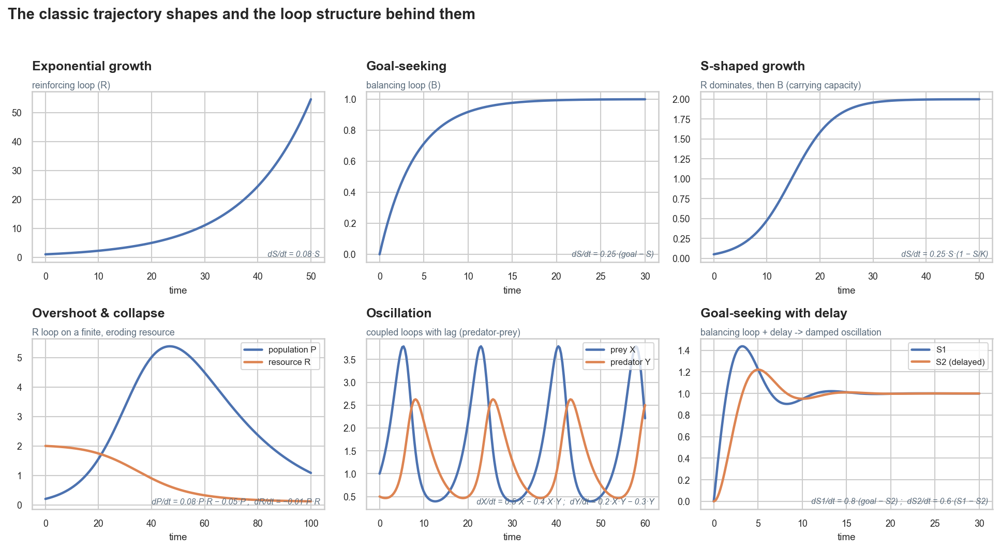

Plotting trajectories in SIP
plots.plot_trajectories shows how any variable evolves over time across the
uncertainty ensemble — either as a median with a percentile band, or as "spaghetti" (individual
parameter draws, which reveals qualitatively different behaviours the median can hide):
import numpy as np
from sip_systemsinsightpipeline import Extract, SDM
from sip_systemsinsightpipeline.plots import plot_trajectories
s = Extract("Insulation_PeakEnergy.xlsx").extract_settings()
s.seed = 0; s.N = 200; s.t_end = 15; s.time_unit = "years"
s.parameter_value_aux = 0.3; s.parameter_value_stocks = 0.1
sdm = SDM(s)
sdm.t_eval = np.linspace(0, s.t_end, 50) # record 50 points -> smooth curves
sdm.run_simulations()
plot_trajectories(sdm) # VOI, first intervention
plot_trajectories(sdm, interventions="all", kind="band") # compare interventions
plot_trajectories(sdm, variables=["Perceived cost savings"], # any variable
kind="spaghetti")
Record enough time points
By default the solver only records the first and last time point (enough for rankings and
optimization, which read the endpoint). For trajectory plots, set
sdm.t_eval = np.linspace(0, s.t_end, 50) before calling
run_simulations() — the function warns if you forget. The integrator's internal
accuracy is unaffected either way; this only controls where the solution is saved.
The six shapes and the loops behind them
Every panel below was generated by SIP itself, from a tiny causal-loop model whose stock
equations are written in the Excel Equation column with fixed coefficients — the same
machinery as any other model in this documentation.

| Shape | Loop structure | Typical real-world examples | Learn more |
|---|---|---|---|
| Exponential growth | A dominant reinforcing (R) loop: the stock feeds its own growth. | Compound interest, early epidemic spread, viral adoption, arms races. | Exponential growth, positive feedback |
| Goal-seeking | A balancing (B) loop: the gap to a goal drives correction, so the response fades as the gap closes. | Thermostats, inventory restocking, body temperature, market price adjustment. | Negative feedback, exponential decay |
| S-shaped growth | R dominates while small, then a B loop (carrying capacity) takes over — the crossover is the inflection point. | Product/technology diffusion, epidemics running out of susceptibles, population growth. | Logistic function, diffusion of innovations |
| Overshoot & collapse | An R loop grows on a finite, eroding resource; by the time the B loop bites, the resource is gone and both crash. | Overgrazing/overfishing, boom-bust markets, reindeer on St. Matthew Island, The Limits to Growth scenarios. | Overshoot, The Limits to Growth |
| Oscillation | Coupled loops with lags: each stock keeps responding to where the other was, perpetually over-correcting. | Predator–prey cycles, commodity/hog cycles, business cycles, supply-chain bullwhip. | Lotka–Volterra equations, bullwhip effect |
| Goal-seeking with delay | A B loop acting through a delay: correction arrives late, so the system overshoots the goal and rings before settling (damped oscillation). | Shower-temperature adjustment, hiring against a backlog, policy with implementation lags. | Damping, control theory |
How to use this when you model
Trajectory shapes are a two-way diagnostic. Forward: if your diagram's dominant
loop is reinforcing, expect exponential take-off until some balancing structure engages — if the
simulation shows otherwise, a loop is missing or a polarity is wrong. Backward: if
your simulated outcome oscillates, look for a balancing loop with a delay; if it collapses after
growth, look for an eroding resource. In SIP, Loops That
Matter makes this diagnosis quantitative: it tells you which loop dominates at each
moment, so a shape change on the plot should line up with a dominance crossover in the LTM chart.
And if trajectories look flat when you expected dynamics, check the
stock/auxiliary classification — a system with no stocks has
no memory and cannot exhibit any of these shapes.
References
- Sterman, J. D. (2000). Business Dynamics: Systems Thinking and Modeling for a Complex World. McGraw-Hill — chapter 4, "Structure and Behavior of Dynamic Systems," is the canonical treatment of these shapes.
- Meadows, D. H. (2008). Thinking in Systems: A Primer. Chelsea Green — the most accessible introduction to stocks, flows and feedback for non-specialists.
- Meadows, D. H. et al. (1972). The Limits to Growth. Universe Books — the overshoot-and-collapse archetype at world scale.
- Wikipedia: System dynamics · Causal loop diagram · Stock and flow · System archetype
- Uleman, J.F. et al. Diagrams-to-Dynamics (D2D), BMC Medicine (in press), arXiv:2508.05659 — the method SIP builds on.